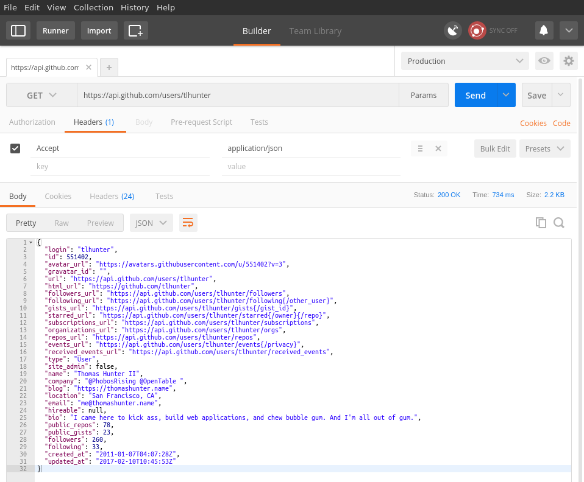
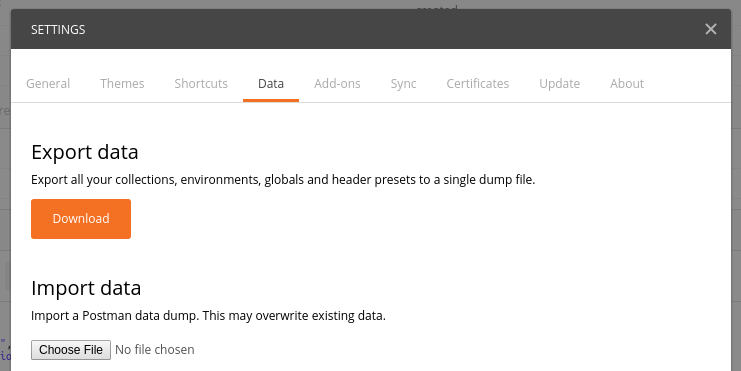

Debugging HTTP API's
Content is from a book I'm writing: bit.ly/2hlATo2
Part I: Postman
- Postman is a GUI tool for editing HTTP requests
- Postman is friendly for non-engineers
- Ability to Import and Export libraries of requests
- Extracts data from URL's to be easily editable
- Install the desktop app now: getpostman.com
First Postman Request
- Type this URL into the Address field
https://api.github.com/users/tlhunter
- Click Headers
- Type
Accept and application/json into fields
- Click Send
- Content is visible below as syntax-highlighted JSON
First Postman Request

Parameter Extraction
- Type this URL into the Address field:
https://api.github.com/users/:username/repos
?sort=created&direction=asc
- Click Params
- Change
username to tlhunter
- Change
direction to desc
- Click Send
Environments
- Click Gear icon then Manage Environments
- Click Add
- Set Environment Name to
Production
github_api / https://api.github.com
- Click Add
- Set Environment Name to
Development
github_api / http://localhost
- Select Production in upper right dropdown
- Address:
{{github_api}}/users/tlhunter
Saving Collections
- Click Save in top right corner
- Set Request Name to
Get User Repos
- Create new collection,
GitHub Sample
- Click Save
- Expand left Sidebar (if not visible)
- Click GitHub Sample then Get User Repos
Importing and Exporting
- Click File | Settings
- Click Data tab
- Click the Download button and save file
- This file can be shared, emailed, checked into Git
- It will contain all collections and environments
Importing and Exporting

Part II: cURL + jq
- cURL and jq is great for engineers
- Copy and paste and you're done
- Able to write complex queries to transform data
- The basis of communication about HTTP
cURL and jq Installation
- OS X and Homebrew
- Debian / Ubuntu Linux
$ sudo apt-get install curl
- Download jq binary for your system
- Or skip the downloads and just experiment online!
Simple cURL Request
- Basic cURL request will output response to screen
$ curl -X GET -H "Accept: application/json" \
"https://api.github.com/users/tlhunter"
- HTTP method defaults to GET, so we can omit
- GitHub API still works without Accept header
$ curl "https://api.github.com/users/tlhunter"
Pipe cURL output to jq
- Normally cURL output is displayed on screen
- Now we pipe the output to jq as input
$ curl "https://api.github.com/users/tlhunter" | jq "."
- Output is now indented and syntax highlighted
Save JSON data to file
- Output from a command can be redirected to a file
- You can even pipe cURL to jq then output to file
$ curl "https://api.github.com/users/tlhunter" > account.json
$ cat account.json | jq "."
Extract partial data
- We can extract and rename attributes from objects
$ curl "https://api.github.com/users/tlhunter" \
| jq '{login, name, url: .html_url}'
Query Data
- We can perform complex array operations
- Let's query for all repositories that have watchers
$ curl "https://api.github.com/users/tlhunter/repos" | jq \
'[.[] | {full_name, watchers_count}] |
map(select(.watchers_count >= 1))'
Conclusion
- Use Postman to share a library of requests
- Use cURL as the lingua-franca for expressing HTTP
- Use jq to query and transform JSON
- Postman has a Code button which outputs cURL!
- Follow me on Twitter: @tlhunter
- More info in upcoming book: bit.ly/2hlATo2